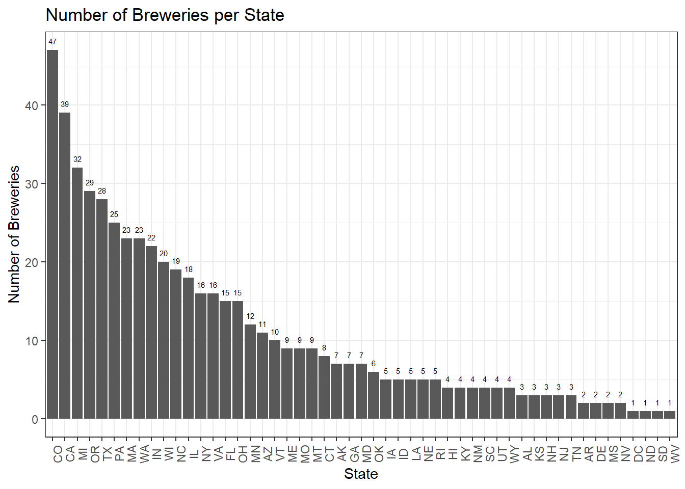
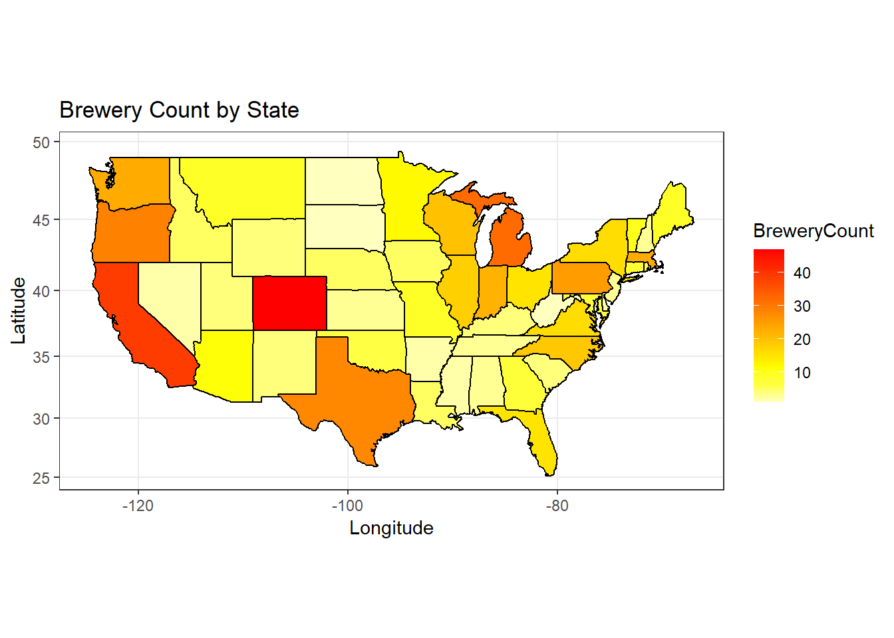
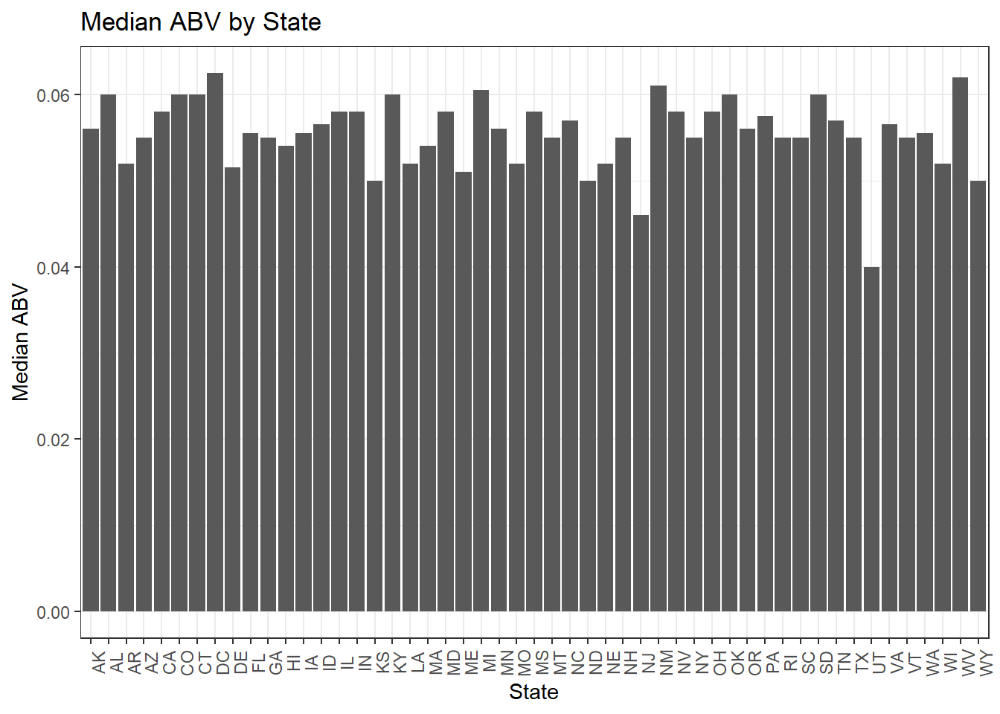
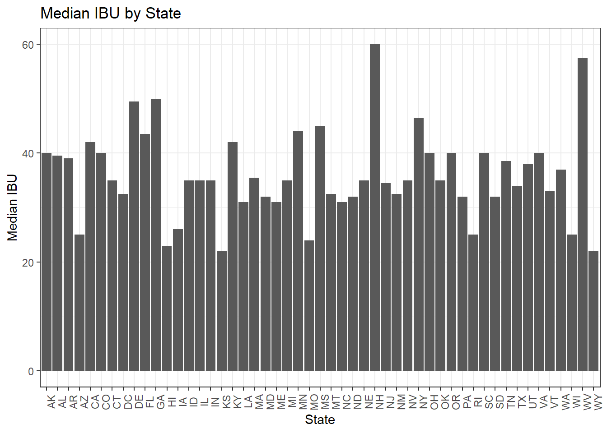
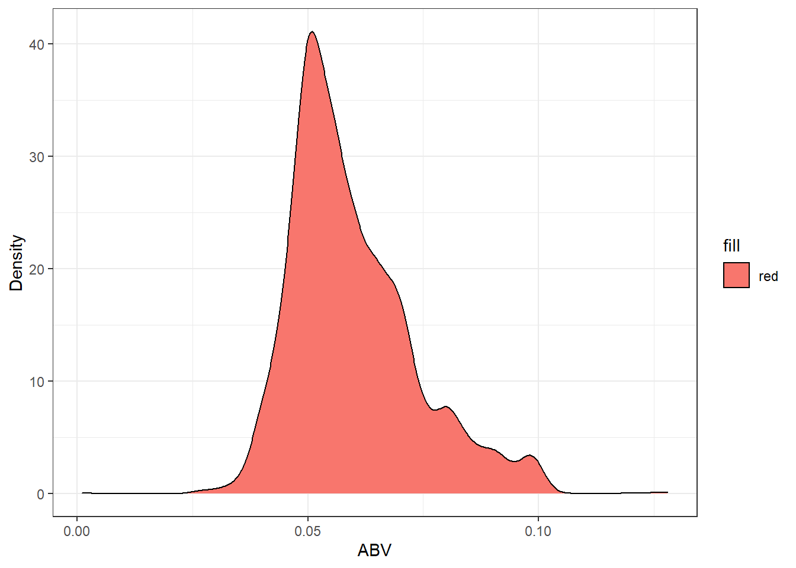
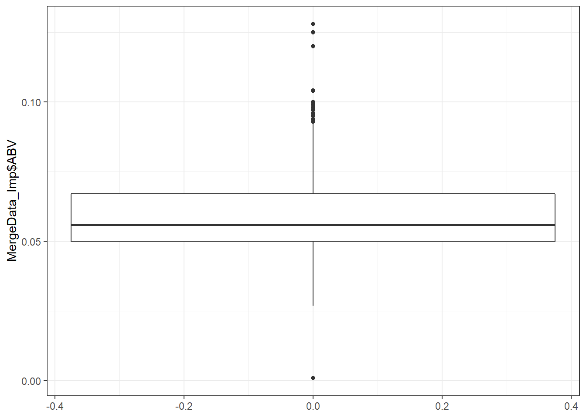
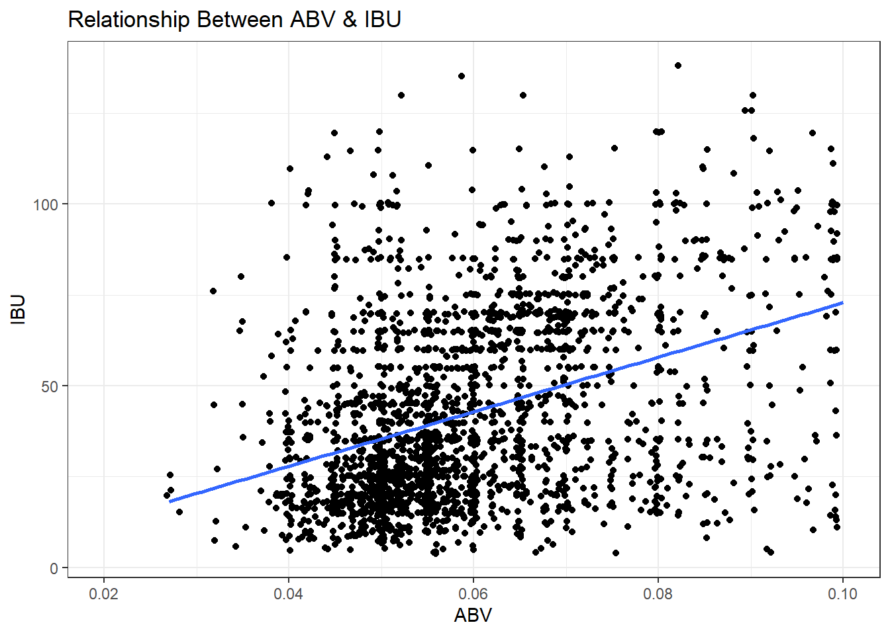
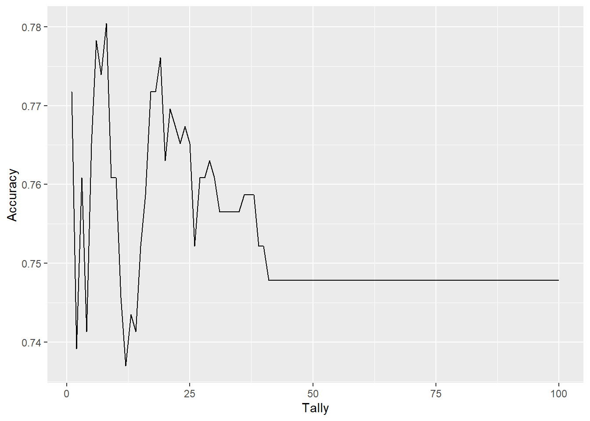
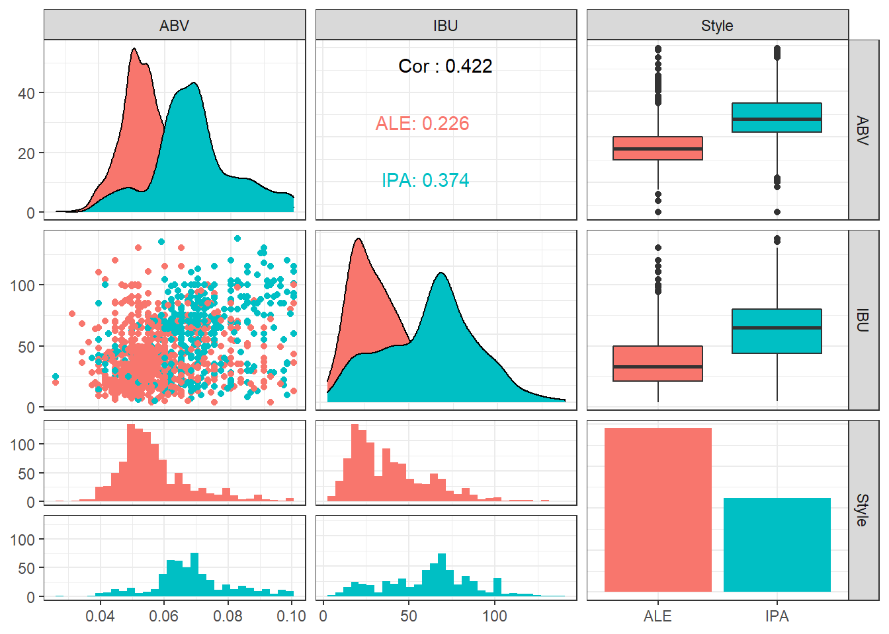
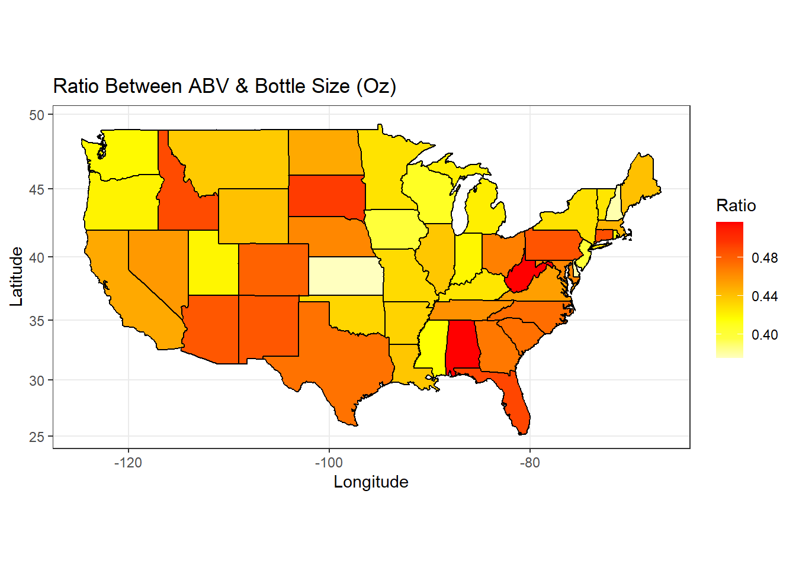

Mr. Brito and Mr. Dutra, thank you for allowing our team to analyze this dataset for you. Please see the below code and outputs along with our formal presentation and write up.
Paul Huggins and Vijayasrikanth Kaniti
# Load necessary libraries to run all of the code in this project. ---
library(rmarkdown)
library(knitr)
library(jsonlite)
library(RCurl)
library(class)
library(httr)
library(caret)
library(e1071)
library(ggplot2)
library(magrittr)
library(plyr)
library(dplyr)
library(tm)
library(tidyr)
library(tidyverse)
library(maps)
library(mapproj)
library(stringr)
library(VIM)
library(mice)
library(forcats)
library(MASS)
library(GGally)
# Load datasets supplied by Budweiser---
Beers <- read.csv("D:/MS Data Science/SMU/6306 - Doing Data Science/Project 1/Beers.csv",header=TRUE, strip.white = TRUE)
Beers <- as.data.frame(Beers)
Breweries <- read.csv("D:/MS Data Science/SMU/6306 - Doing Data Science/Project 1/Breweries.csv",header=TRUE, strip.white = TRUE)
Breweries <- as.data.frame(Breweries)
# We are now able to begin the exploratory data analysis.# To find and visualize the amount of breweries by state, we created a bar plot and a US state map that is color coded by number of breweries.
# Barplot for count of breweries per state ---
ggplot(data=Breweries,aes(x=State)) +
geom_bar(aes(x=forcats::fct_infreq(State))) +
ggtitle("Number of Breweries per State") +
ylab("Number of Breweries") +
xlab("State") +
theme_bw() +
theme(axis.text.x = element_text(angle = 90)) +
geom_text(stat='count', aes(label=..count..),size=2, vjust=-1)
# US HEATMAP ---
lookup = data.frame(abb = state.abb, State = state.name)
colnames(Breweries)[4] = "abb"
Breweries$abb=trimws(Breweries$abb)
Breweries2 = merge(Breweries,lookup,"abb") # make one dataset with state names and abb
BreweriesMapData = count(Breweries2,State) #count up the occurance of each state.
colnames(BreweriesMapData)[2] = "BreweryCount" #change "n" to "BreweryCount"
BreweriesMapData$region <- tolower(BreweriesMapData$State)
BreweriesMapData2 = BreweriesMapData[-1]
states <- map_data("state")
map.df <- merge(states,BreweriesMapData2, by="region", all.x=T)
map.df <- map.df[order(map.df$order),]
ggplot(map.df, aes(x=long,y=lat,group=group))+
geom_polygon(aes(fill=BreweryCount))+
geom_path()+
scale_fill_gradientn(colours=rev(heat.colors(10)),na.value="grey90")+ggtitle("Brewery Count by State") + ylab("Latitude") + xlab("Longitude") +
coord_map() + theme_bw()
# California, Colorado, Texas, Oregon, Washington & Michigan have the highest number of breweries.# To better utilize the data, we needed to merge the breweries and beer datasets. We achieved this by merging the data on the "Brewery ID" column.
# Change column names in Beers dataset to match Breweries data ---
colnames(Beers)[5] <- "Brew_ID"
# Merge the datasets on the Brewery Id Column ---
MergeData <- merge(Breweries, Beers, by = "Brew_ID", all = TRUE)
# Change the column names of teh new dataset ---
colnames(MergeData)[2] <- "Brewery"
colnames(MergeData)[5] <- "Beer_Name"
# View first 6 rows and last 6 rows ---
head(MergeData,6)tail(MergeData,6)# There are a number of missing values in the dataset
# Count number of NA's in the dataset ---
na_count <- sapply(MergeData, function(y) sum(length(which(is.na(y)))))
na_count <- data.frame(na_count)
# There are 62 missing values in the ABV column
# There are 1005 missing values in the IBU column
# Replacing the NA's ---
# Impute missing values using a linear regression model (MICE) ---
tempData <- mice(MergeData,m=1,maxit=0,meth='fastpmm',seed=500)
MergeData_Imp <- complete(tempData,1)
# The missing values have now been replaced with predicted values from the Mice package.
# This method uses linear regression to predict what the missing values might have been.
# Uses rows of complete data and anlyzes the relationship between the values.# Imputed Data ---
MergeMedians <- MergeData_Imp
# Find medians by state for ABV & IBU
ABVMergeData_Imp <- aggregate(ABV ~ abb, MergeData_Imp, median)
IBUMergeData_Imp <- aggregate(IBU ~ abb, MergeData_Imp, median)
MergeData_ImpOrg <- merge(ABVMergeData_Imp, IBUMergeData_Imp, "abb")
# Plot ABV by state
ggplot(MergeData_ImpOrg, aes(MergeData_ImpOrg$abb, MergeData_ImpOrg$ABV)) +
geom_bar(stat="identity") + ylab("Median ABV") + xlab("State") + ggtitle("Median ABV by State") + theme_bw() + theme(axis.text.x = element_text(angle = 90))
# The median ABV across all states is 0.056 or 5.6%
# Plot IBU by state
ggplot(MergeData_ImpOrg, aes(MergeData_ImpOrg$abb, MergeData_ImpOrg$IBU)) +
geom_bar(stat="identity") + ylab("Median IBU") + xlab("State") + ggtitle("Median IBU by State") + theme_bw() + theme(axis.text.x = element_text(angle = 90))
# The median IBU across all states is 35# Find maximum ABV & IBU --------------------------------------------------------------------
# ABV
MaxABVState_Imp <- aggregate(ABV ~ abb, MergeData_Imp, max)
MaxABVState_Imp <- MaxABVState_Imp[order(-MaxABVState_Imp$ABV),]
# Colorado has the maximum ABV of 0.128 (12.8%)
# IBU
MaxIBUState_Imp <- aggregate(IBU ~ abb, MergeData_Imp, max)
MaxIBUState_Imp <- MaxIBUState_Imp[order(-MaxIBUState_Imp$IBU),]
# Oregon has the maximum IBU of 138 units# Statistics and Distributions of Imputed Data ---
# Summary Statistics
summary(MergeData_Imp$ABV)## Min. 1st Qu. Median Mean 3rd Qu. Max.
## 0.00100 0.05000 0.05600 0.05967 0.06700 0.12800# Minimum is 0.001
# 1st Quarter is 0.050
# Median is 0.056
# Mean is 0.0597
# 3rd Quarter is 0.067
# Max is 0.128
# Density plot of ABV values
ggplot(MergeData_Imp, aes(x=MergeData_Imp$ABV)) + geom_density(aes(fill="red")) + xlab("ABV") + ylab("Density") + theme_bw()
# Boxplot of ABV values
ggplot(MergeData_Imp, aes(y=MergeData_Imp$ABV)) + geom_boxplot() +theme_bw()
# The Density & Boxplots show a right skewed distribution meaning that the mean is greater than the median.
# This indicates that the ABV values are weighted more towards the upper end of the dataset compared to lower.# Scatter plot of IBU & ABV ---
ggplot(MergeData_Imp, aes(x=MergeData_Imp$ABV, y=MergeData_Imp$IBU)) + geom_point(position = "jitter") + ylab("IBU") + xlab("ABV")+ggtitle("Relationship Between ABV & IBU") + xlim(c(0.02,0.1)) + theme_bw()+geom_smooth(method=lm,se=FALSE)
# There appears to be a positive correlation between ABV & IBU. Indicating that as ABV values increase, as do IBU values. Let's run a regression model to quanity the relationship.
# Linear Regression model
cor.test(MergeData_Imp$IBU, MergeData_Imp$ABV)##
## Pearson's product-moment correlation
##
## data: MergeData_Imp$IBU and MergeData_Imp$ABV
## t = 20.594, df = 2408, p-value < 2.2e-16
## alternative hypothesis: true correlation is not equal to 0
## 95 percent confidence interval:
## 0.3524970 0.4204109
## sample estimates:
## cor
## 0.3869786# The r value is 0.409, meaning that there is a moderately strong relationship between the two varlabies.# Create KNN DataSet ---
KNNData <- MergeData_Imp
# Filter and Replace IPA & Ale ---
KNNData$Style <- as.character(KNNData$Style)
KNNData <- filter(KNNData,grepl('IPA|Ale',Style))
KNNDataS <- dplyr::select(KNNData,ABV,IBU,Style)
KNNDataS$Style <- as.character(KNNDataS$Style)
for (i in 1:1534) {
if (is.na(str_match(KNNDataS[i,3],".Ale"))) {
KNNDataS[i,3] <- "IPA"
} else {
KNNDataS[i,3] <- "ALE"
}
}
set.seed(6) # set seed to ensure reproducible research
ALESplit = .70
IPASample <- sample(1:dim(KNNDataS)[1],round(ALESplit * dim(KNNDataS)[1]))
trainIpa <- KNNDataS[IPASample,]
testIpa <- KNNDataS[-IPASample,]
# Find Best Value of K for KNN test ---
trainIpa$Style <- as.factor(trainIpa$Style)
testIpa$Style <- as.factor(testIpa$Style)
set.seed(6) # set seed to ensure reproducible research
accu = data.frame(accuracy = numeric(100), k = numeric(100))
for (i in 1:100) {
classify = knn(trainIpa[,c(1,2)],testIpa[,c(1,2)],trainIpa$Style, prob = TRUE, k = i)
table(classify,testIpa$Style)
confused <- confusionMatrix(table(classify,testIpa$Style))
accu$accuracy[i] = confused$overall[1]
accu$k[i] = i
}
ggplot(accu,aes(x=k,y=accuracy)) +
geom_line() +
labs(x="Tally",y="Accuracy")
# The best value for k appears to be around 8. We will use k=8 going forward.
# KNN Test ---
KNNIPA <- knn(trainIpa[,1:2],testIpa[,1:2],cl=trainIpa$Style,k=8,prob = TRUE)
CM <- confusionMatrix(table(KNNIPA,testIpa$Style))
CM## Confusion Matrix and Statistics
##
##
## KNNIPA ALE IPA
## ALE 252 70
## IPA 36 102
##
## Accuracy : 0.7696
## 95% CI : (0.7283, 0.8073)
## No Information Rate : 0.6261
## P-Value [Acc > NIR] : 3.178e-11
##
## Kappa : 0.4874
##
## Mcnemar's Test P-Value : 0.001349
##
## Sensitivity : 0.8750
## Specificity : 0.5930
## Pos Pred Value : 0.7826
## Neg Pred Value : 0.7391
## Prevalence : 0.6261
## Detection Rate : 0.5478
## Detection Prevalence : 0.7000
## Balanced Accuracy : 0.7340
##
## 'Positive' Class : ALE
## # Graph the knn Results ---
KNNDataS %>%
ggpairs(aes(color=Style)) + theme_bw()
# We can conclude that IPA's generally have higher IBU & ABV values compared to Ales.
# NB Test ---
KNNDataS$Style <- as.factor(KNNDataS$Style)
testIpa$Style <- as.factor(testIpa$Style)
trainIpa$Style <- as.factor(trainIpa$Style)
Model <- naiveBayes(Style ~., data = trainIpa)
Model##
## Naive Bayes Classifier for Discrete Predictors
##
## Call:
## naiveBayes.default(x = X, y = Y, laplace = laplace)
##
## A-priori probabilities:
## Y
## ALE IPA
## 0.6405959 0.3594041
##
## Conditional probabilities:
## ABV
## Y [,1] [,2]
## ALE 0.05731250 0.01191245
## IPA 0.06823057 0.01274551
##
## IBU
## Y [,1] [,2]
## ALE 38.66424 22.86679
## IPA 62.94041 25.31575df <- data.frame(Style = "IPA",ABV = testIpa$ABV, IBU = testIpa$IBU)
Prediction <- predict(Model,df)
table <- table(Prediction,testIpa$Style)
CM2 <- confusionMatrix(table)
CM2## Confusion Matrix and Statistics
##
##
## Prediction ALE IPA
## ALE 252 74
## IPA 36 98
##
## Accuracy : 0.7609
## 95% CI : (0.7192, 0.7992)
## No Information Rate : 0.6261
## P-Value [Acc > NIR] : 4.73e-10
##
## Kappa : 0.4655
##
## Mcnemar's Test P-Value : 0.000419
##
## Sensitivity : 0.8750
## Specificity : 0.5698
## Pos Pred Value : 0.7730
## Neg Pred Value : 0.7313
## Prevalence : 0.6261
## Detection Rate : 0.5478
## Detection Prevalence : 0.7087
## Balanced Accuracy : 0.7224
##
## 'Positive' Class : ALE
## # The standard KNN test gave us slightly better accuracy at 78%. This is stating that the program can classify type of beer by their IBU/ABV values correctly 78% of the time.# Heatmap of ratio between ABV & Bottle Size
lookup = data.frame(abb = state.abb, State = state.name)
colnames(MergeData_Imp)[4] = "abb"
MergeData_Imp$abb=trimws(MergeData_Imp$abb)
Breweries2 = merge(MergeData_Imp,lookup,"abb") # make one dataset with state names and abb
Breweries2$Ratio = Breweries2$ABV/Breweries2$Ounces
BreweriesMapData = aggregate(Ratio ~ State, Breweries2, mean)
BreweriesMapData$Ratio = BreweriesMapData$Ratio*100
BreweriesMapData$region <- tolower(BreweriesMapData$State)
BreweriesMapData2 = BreweriesMapData[-1]
states <- map_data("state")
map.df <- merge(states,BreweriesMapData2, by="region", all=T)
map.df <- map.df[order(map.df$order),]
ggplot(map.df, aes(x=long,y=lat,group=group))+
geom_polygon(aes(fill=Ratio))+
geom_path()+
scale_fill_gradientn(colours=rev(heat.colors(8)),na.value="grey90")+ggtitle("Ratio Between ABV & Bottle Size (Oz)") + ylab("Latitude") + xlab("Longitude") +
coord_map() + theme_bw()
# A higher ratio (darker color) indicates states that prefer higher ABV's in smaller bottles.
# This map gives insight into how to market certain beers per state.
# Example: Kansas
# Kansas prefers lower ABV in larger bottles.
# This data can be used to target this demographic or introduce a new beer that is the opposite to fill that void in the marketplace.